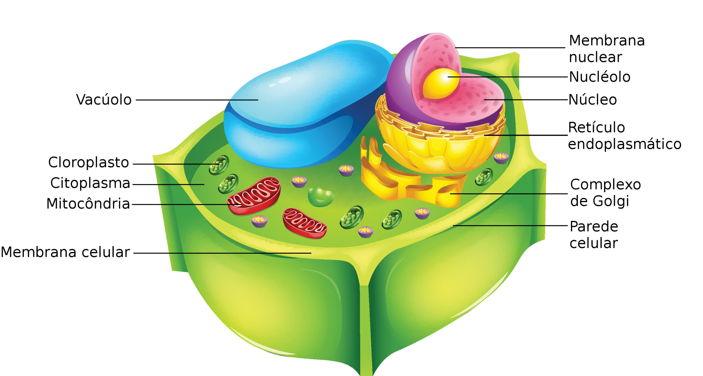

Estrutura e Funções das Principais Organelas
A célula vegetal, é uma célula eucariótica que compõe o tecido das plantas
são semelhantes as células animais, porém possuem estruturas exclusivas que
ajudam a planta a sobreviver, crescer e produzir o próprio alimento.

A parede celular é uma camada rígida localizada ao redor da célula
ela é formada principalmente por celulose e, graças a parede celular
plantas conseguem ficar eretas sem precisar de um esqueleto.
a membrana plasmática é uma camada fina localizada abaixo da parede celular
sua principal função é controlar a entrada e a saída de substâncias
como água, nutrientes e gases, ela age como uma barreira, permitindo a passagem
apenas do que a celula precisa.
o núcleo da célula vegetal abriga o DNA da planta, que contém
todas as informações géneticas necessarias para o funcionamento
crescimento e reprodução da célula.
Os cloroplastos são organelas responsáveis pela fotossíntese.
Eles contêm clorofila, o pigmento que dá a cor verde às plantas, durante
a fotossíntese, captam a energia da luz solar e a transformam em alimento para a planta.
O vacúolo central é uma grande estrutura cheia de líquido chamada suco vacuolar.
Ele armazena água, sais minerais, nutrientes e substâncias de reserva, além disso,
ajuda a manter a pressão interna da célula, deixando a planta firme.
As mitocôndrias são responsáveis pela produção de energia da célula
elas transformam nutrientes em energia ultilizável pela célula.
O Complexo de Golgi é uma estrutura composta por discos achatados empilhados um sobre o outro.
Ele é responsável pelo processamento, modificação e empacotamento de proteínas e lipídios produzidos pelos ribossomos.
Os ribossomos são estruturas responsáveis pela síntese de proteínas.
Eles leem as instruções contidas no RNA mensageiro e utilizam aminoácidos para formar cadeias proteicas.
O citoplasma é a substância coloidal que preenche o interior da célula.
Ele é o ambiente onde ocorrem as principais atividades celulares.